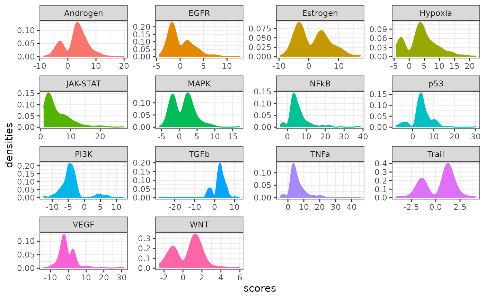

PROGENy pathway signatures
Pau Badia-i-Mompel
Heidelberg UniversiySource:
vignettes/progeny.Rmd
progeny.RmdIntroduction
PROGENy is resource that leverages a large compendium of publicly available signaling perturbation experiments to yield a common core of pathway responsive genes. For each pathway, a collection of genes are available along their contribution and significance to it.
Inside PROGENy, one can find gene signatures for 14 different pathways:
- Androgen: involved in the growth and development of the male reproductive organs.
- EGFR: regulates growth, survival, migration, apoptosis, proliferation, and differentiation in mammalian cells
- Estrogen: promotes the growth and development of the female reproductive organs.
- Hypoxia: promotes angiogenesis and metabolic reprogramming when O2 levels are low.
- JAK-STAT: involved in immunity, cell division, cell death, and tumor formation.
- MAPK: integrates external signals and promotes cell growth and proliferation.
- NFkB: regulates immune response, cytokine production and cell survival.
- p53: regulates cell cycle, apoptosis, DNA repair and tumor suppression.
- PI3K: promotes growth and proliferation.
- TGFb: involved in development, homeostasis, and repair of most tissues.
- TNFa: mediates haematopoiesis, immune surveillance, tumour regression and protection from infection.
- Trail: induces apoptosis.
- VEGF: mediates angiogenesis, vascular permeability, and cell migration.
- WNT: regulates organ morphogenesis during development and tissue repair.
Activity estimation
These signatures, coupled with any statistical method, can be used to infer pathway activities from bulk or single-cell transcriptomics. In this vignette we just show how to access these signatures and some of their properties. To infer pathway activities, please check out decoupleR, available in R or python.
Load
First we load the necessary packages:
Here is how to retrieve all genes from each pathway in human:
model <- progeny::model_human_full
head(model)
#> gene pathway weight p.value
#> 1 RFC2 EGFR 1.47064662 0.001655275
#> 2 ESRRA EGFR 0.17858956 0.211837604
#> 3 HNRNPK EGFR 0.30669860 0.084560061
#> 4 CBX6 EGFR -0.67550734 0.017641119
#> 5 ASRGL1 EGFR -0.25232814 0.295429969
#> 6 FLJ30679 MAPK -0.06047373 0.628461747Here we can observe how some genes behave for some pathways. For example, The gene CBX6 has a negative response to EGFR, meaning that when there is EGFR signaling this gene is down-regulated. On the other hand, the gene RFC2 has a positive weight for EGFR, meaning that when there is EGFR signaling it becomes up-regulated. We can also see the significance of each gene to each pathway. To better estimate pathway activities, we recommend to select the top 100 significant genes for each pathway or filter by significance.
Exploration
We can visualize the distribution of weights for the top 100 genes per pathway:
# Get top 100 significant genes per pathway
model_100 <- model %>%
group_by(pathway) %>%
slice_min(order_by = p.value, n = 200)
# Plot
ggplot(data=model_100, aes(x=weight, color=pathway, fill=pathway)) +
geom_density() +
theme(text = element_text(size=12)) +
facet_wrap(~ pathway, scales='free') +
xlab('scores') +
ylab('densities') +
theme_bw() +
theme(legend.position = "none")
Each pathway show a different distribution of weights. Some up-regulate more genes than down-regulate, like NFkB or TNFa, while others do the opposite, like PI3K or VEGF.